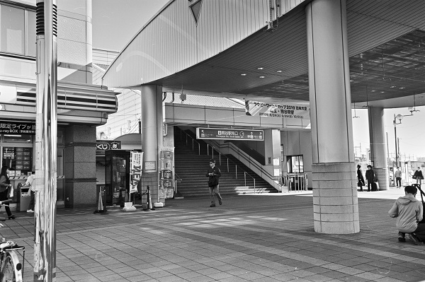

熊谷駅 Kumagaya
行田駅←← 高崎・上越線 →→ 籠原駅ｿｼｵ流通ｾﾝﾀｰ←← 秩父鉄道 →→ 上熊谷

2018/12/2 ﾍｷｻｰRF 35mm ｱｸﾛｽ

2018/12/2 ﾍｷｻｰRF 35mm ｱｸﾛｽ

2018/10 ﾍﾟﾝﾀｯｸｽLX M28mm ｱｸﾛｽ

2017/12/10 ﾍｷｻｰRF 35mm ｱｸﾛｽ

2017/12/10 ﾍｷｻｰRF 35mm ｱｸﾛｽ

2017/12/10 ﾍｷｻｰRF 35mm ｱｸﾛｽ

2017/9 ﾐﾉﾙﾀCLE ｽﾞﾐｸﾛﾝ35mm ｱｸﾛｽ

2017/9 ﾐﾉﾙﾀCLE ｽﾞﾐｸﾛﾝ35mm ｱｸﾛｽ

2017/9 ﾐﾉﾙﾀCLE ｽﾞﾐｸﾛﾝ35mm ｱｸﾛｽ

2014/10